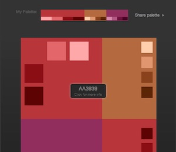

Choose Your Colors
Activity Instructions
Estimated Time: 15 minutes
Color plays an essential role in any website and so the colors you use should be chosen deliberately. There are volumes of material on color theory that can help with these choices.
To learn more about color theory try these sites
- http://www.colormatters.com/color-and-design/basic-color-theory
- http://www.worqx.com/color/color_basics.htm
- http://www.smashingmagazine.com/2010/01/28/color-theory-for-designers-part-1-the-meaning-of-color/ - This one specifically addresses color in design
There are also some great tools available to help in developing good color schemes. One is Paletton.com. Visit Paletton.com and keeping your site purpose and audience in mind build a color scheme using it.
Step 01
Start by choosing a color you like or think will work well for your site.Step 02
Then choose among the options above the color wheel (Monochromatic, Adjacent, Triad, Tetrad). Play around until you end up with a scheme you like.
Step 03
Once you have built your palette hover your mouse over each color that you would like to use in your site and you will see a 6 digit "number". This is what is know as a hexadecimal color code and is usually preceded by a "#". These are the most common way to represent colors on the web. Copy that code into the Site plan document.
Step 04
Then click the "Share Palette" link in the top right corner. This will open a new window with your palette. Right click on the image with your palette colors and select "Copy Image". Then open up the site plan document place the cursor where you would like it and hit CTRL-C (pc) or CMD-C (mac) to paste the image into the document to replace the placeholder image. You will also want to bookmark your palette for later in case you want to make any changes.